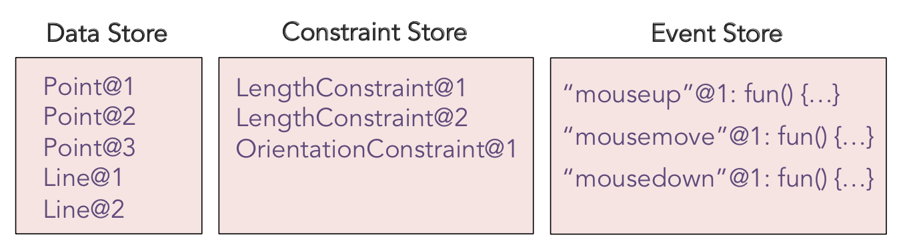
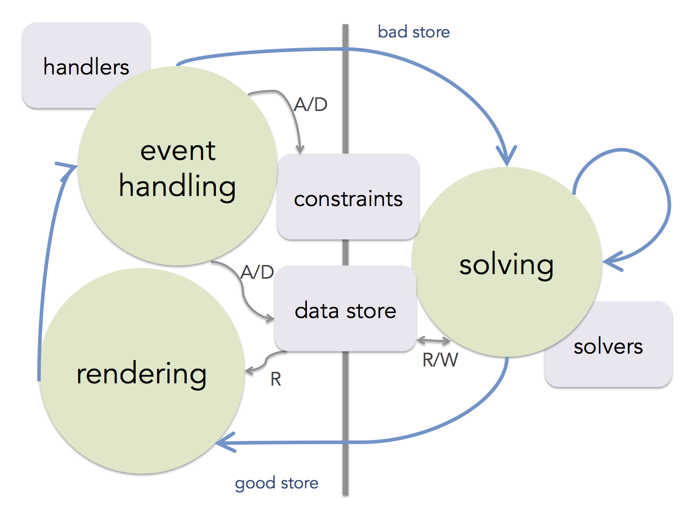
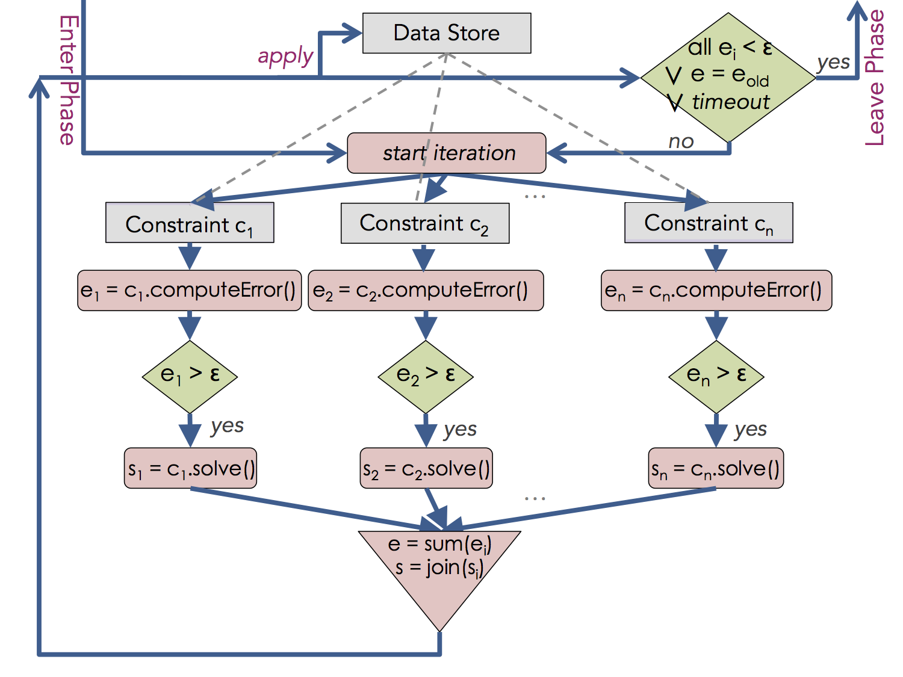

As we saw in the overview of the Overveld approach, each individual constraint has provided the appropriate methods to measure the current error based on the current state, expressed in terms of a set of deltas on variables. Thus a single function (recall we called it
In CRP, we separate the function that defines the constraint and the one that solves it. Constraint is stated here using a function here called
All the predefined constraints have a defined a few methods implemented and if the user wants to define a new constraint type they must be implemented as well. For constraint types the most important variables and methods are shown on the top:
Here is how these properties of defined for an instance of
// propertyTypes:
LengthConstraint.prototype.propertyTypes =
{p1: 'Point', p2: 'Point', l: 'Number'}
// computeError:
LengthConstraint.prototype.computeError = function(pseudoTime) {
return distance(this.p1, this.p2) - this.l
}
// solve:
LengthConstraint.prototype.solve = function(pseudoTime) {
var p1 = this.p1, p2 = this.p2
var delta = (distance(p1, p2) - this.l) / 2
var e12 = scaledBy(normalized(minus(p2, p1)), delta)
var res = {p1: plus(p1, e12), p2: plus(p2, scaledBy(e12, -1))}
return res
}
Contrast the above with the
But how are individual solutions consolidated in the presence of multiple constraints? CRP employs the approach of Overveld (see Part I) to collect the solutions from unsatisfied constraints and join them in order to come up with a single consolidated solution. Unlike the Overveld approach, however, where the joining is always simply averaging numeric values per variable, CRP generalizes this and allows the user to define a
This generality is essential to accomodate numerious scenarios that arise during programming applications. Firstly, we cannot assume the patches proposed by the constraint are numeric real values, as they might be on finite data types, etc. Secondly, the right way to combine two competing solutions from two individual constraints maybe to raise a conflict and stop, prefer one to other because of priorities, or even apply some custom merge function not at all captured by averaging the values. We'll see examples later.
Therefore, let us review the important methods that data classes must define:
// Overveld style (damped avg) (default) solution join fn:
dampedAverageJoin = function(curr, solutions) {
var damping = 0.25
var sum = 0
solutions.forEach(function(v) { sum += v })
var avg = sum / solutions.length
return curr + (damping * (avg - curr))
}
// Pick a solution join fn:
pickOneJoin = function(curr, solutions) {
return solutions[0]
}
Point.prototype.solutionJoins = function() {
return {color: pickOneJoin}
}
So how is this information used? Let's see how constraint solving is done in the CRP model which this tool implements.
There are three main stores that are maintained by the model: (a) data, (b) constraint, and (c) event store. These stores get populated and modified by user operations of instantiating or removing data and constraints or registering events handlers. During the execution of the program, the stores might be modified as part of solving for various constraints or running event handlers. Figure below illustrates a possible configuration of the stores during the execution of the logo example in the previous part.
|  | State Model |
In order to support responsive interactive and animated programs, we adopt a two-phased execution model, cycling at an adjustable frame rate, e.g., 1/65 of a second. The clock time at the moment of each arrival on the first phase is used as the pseudo-time for the system. The two phases are: (A) event handling phase and (B) solving phase. The model is depicted in the figure below, which we'll explain next.
|  | Two-phase execution model in CRP |
The system starts in phase A. It's at the top of this phase where the system is considered to be at a "good" state and the current state is drawn on the canvas (should changes have occurred). The rendering step calls the
During the solving phase B (illustrated in figure below) the system invokes the
At this point the system applies the consolidated values to each variable. However, since these values aren't exactly what each constraint had asked for, after this step all or some of the previously unhappy constraints are likely to remain unhappy (or even previously happy constraints may have now turned unhappy). This is were the iterative relaxation approach comes in. As long as that is the case, the system repeats the process above, until either:
At that point, the model cycles back to the reactive phase A, and this process repeats.
|  | Solving phase |
Read Part V: Using Sketchpad14 with Custom Types
Back to Table of Contents